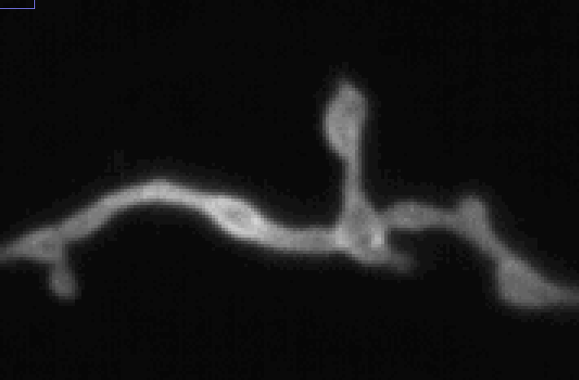
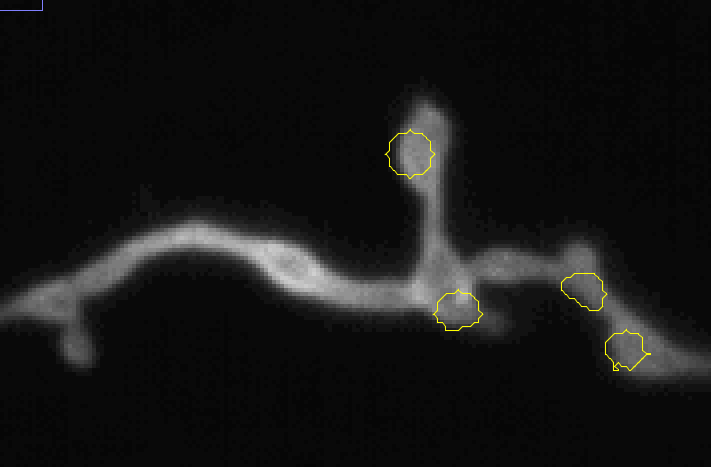

First steps
Data Neutoroch can work with
Neurotorch is designed to find regions of synaptic activity in microscopic videos tagged with iGluSnFR3, but is in general capable to detect any kind of local increase in brightness. You can get some basic knowledge by reading this wikipedia article (Glutamate-sensitive fluorescent reporter), but as a beginning, consider the following image
|  |  |
Example of synaptic activity |
Detected ROIs in the image |
Neurotorch does this by calculating the so called delta video (see section Algorithm and core concepts for more details)
Open a file/microscopic video
To open files, you have to options: a) directly in Neurotorch or b) using Fiji/ImageJ. In both cases, the image must fullfill the following criteria
It must have exactly a 3 dimensional shape: time, x and y. Tip: If you have multiply color channels, use ImageJ to merge them to one channel
It must have at least two frames
Neurotorch uses the powerful PIMS libary including BioFormats used also by Fiji/ImageJ, which can open nearly all data formats. While tested and verified to work with TIFF and ND2 files, in theory nearly all bio formats should work.
Warning
The connection to ImageJ in Neurotorch has a bug, as it will use the same BioFormats instance as Fiji/ImageJ. Therfore Fiji can’t be started if there has been already opened an BioFormats file. If you need to use BioFormats you should start Fiji/ImageJ first.
Using Neurotorch to open files you can choose to “Open noisy image”, which is just a shortcut to apply Denoising with the default σ. If you choose ImageJ, note that you can send the image to Neurotorch using “ImageJ –> Neurotorch” in the menubar under “ImageJ”.
Warning
Neurotorch requires at least twice (with denoising three times) as much memory as the unpacked file. But generating the ImageViews (specially the median and standard deviation) will consume temporarily nearly double the RAM. So consider at least 5x the file size of free RAM before opening any image.